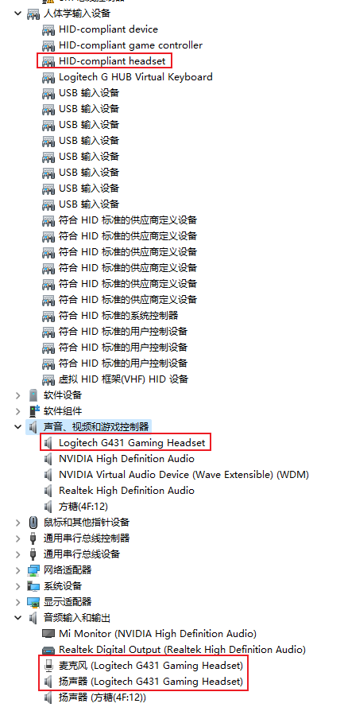
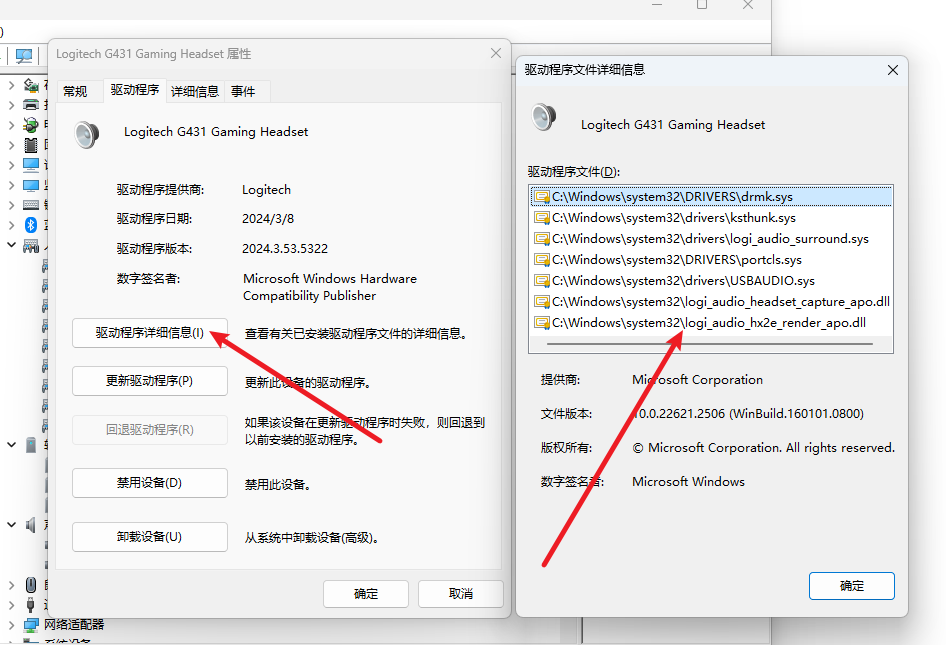
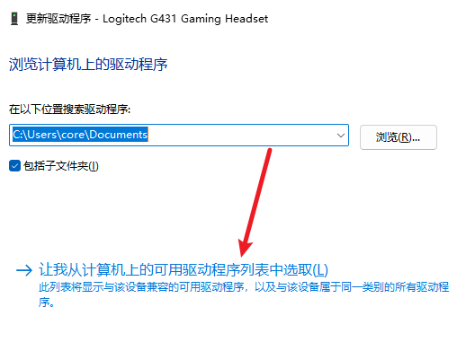
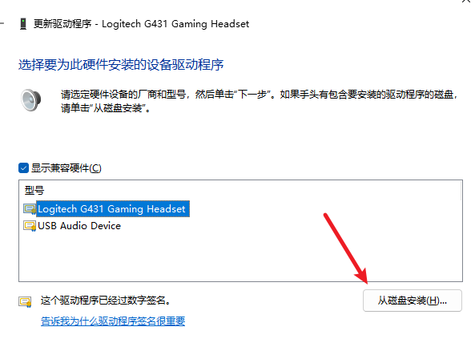
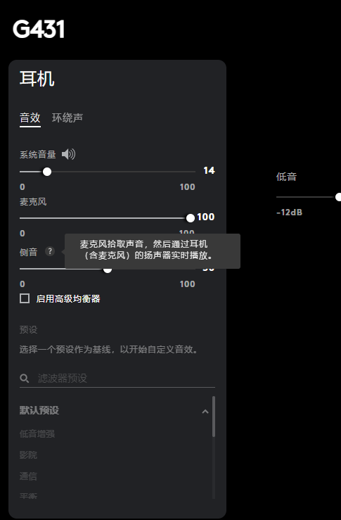

Win11 Logitech G431 耳机驱动安装
文章目录
书接上回，回来发现 Ghub 有更新，有点小开心，客服说的问题驱动无法正常加载的问题能搞定了，结果折腾一圈，重装卸载，还是不能正常使用。
背景
继续联系客服咨询处理处理方案，结果被告知，能有工程师远程协助，但是工程师的上班时间和我自己的上班时间一模一样，无奈下只能放弃，翻看上次排查问题留下的资料，准备尝试手动安装驱动。
获取驱动安装包
罗技官方并没有单独提供设备的驱动安装包，我如何才能拿到驱动文件呢？
配合上次重装系统留下的系统镜像安装包，我们可以在本地虚拟机中重装一次系统，再纯净的系统中，我们单独部署一份Ghub，将耳机设备介入到虚拟机中，找到驱动的路径，拷贝出来即可。
相关的路径：
- C:\ProgramData\LGHUB
- C:\Windows\System32\DriverStore\FileRepository\logi_audio.inf_amd64_010b035044e24be4
设备管理器
重点是第二个路径怎么找到的，我们先简单梳理一波 Win11 系统如何手动管理驱动文件。这块内容，通过控制变量法来识别的，通过不断的插拔设备，在虚拟机里面分析设备管理器中的设备信息，识别到耳机合计有三个驱动需要处理。其中有两个驱动是系统自带的，只有一个是罗技提供的。

上图中的第二个驱动，是由罗技提供的，我们分析设备现在的驱动程序，再虚拟机里面翻找所有的驱动路径，当然你首先需要找到 logi 开头的文件，然后进行文件的对比，你就能定位到驱动的文件件，拷贝整个文件夹，你就拿到了驱动安装包

安装驱动
还在在设备管理器的界面，点击：更新驱动，点击：浏览我的电脑查找驱动，进入到如下界面：

当然你打开的时候，只能看到一个驱动，那就是普通的USB驱动，选择从磁盘安装，路径就是我们前面拷贝出来的文件夹，安装以后，选择的下拉清单中，就能多出来罗技特有的驱动，将设备驱动切换到新安装的驱动即可。

人体学设备驱动
这块的驱动文件都是系统提供的，你只需要检查设备的驱动前面是否存在感叹号，如果存在感叹号，进入驱动选择界面，随意切换一个其他类型的驱动，然后再改回来即可恢复正常
完工
耳机麦克风的音量恢复正常，熟悉的耳返功能也回来了。
